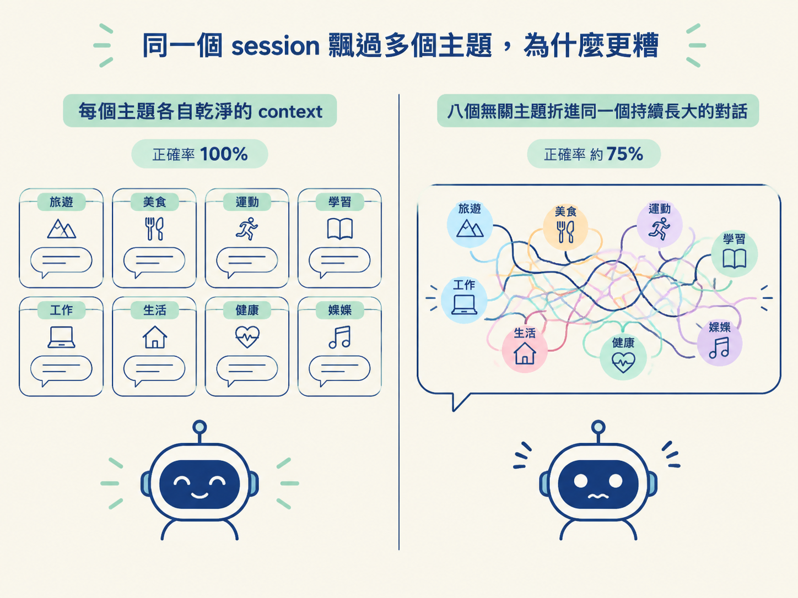
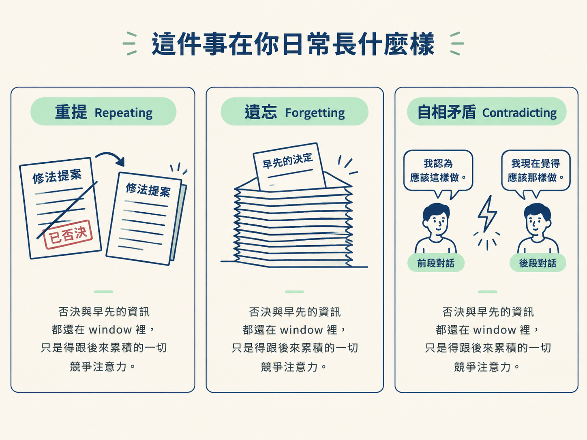

能說明為什麼一個 session 飄過多個無關主題會比多個短 session 更差，並認出 Repeating／Forgetting／Contradicting 三個徵兆。
想像你這樣過一個下午：在同一個對話視窗裡，先修一個登入的 bug，中途岔去討論某個功能的設計，接著又跑去改一個完全無關的功能，最後才切回登入 bug。你覺得自己很有效率，一個視窗全包了。
問題是，這種「順手全塞進同一個對話」的做法，其實是在替模型打造一個比拆成幾個短 session 更糟糕的環境。而這件事，是上一節的 context rot 解釋不了的。
上一節講的是「量」與「位置」：window 越滿、資訊越埋在中間，可靠度越低。但有一種情況，window 根本還沒裝滿，模型就已經開始恍神。這個第二個問題跟 window 有多滿無關，只跟 window 裡裝了什麼樣的東西有關。
研究者直接測過這個情境。他們讓模型回答問題，當每個主題都有自己乾淨的 context 時，正確率是 100%。
接著他們把八個無關的主題折進同一個持續長大的對話裡，再問同樣的問題。正確率掉到大約 75%。

注意，模型本身沒有換，參數沒有動，能力也沒有變。唯一的差別是：有多少無關的材料，在跟它真正該專注的那件事搶注意力。
這個現象在近年的研究裡有了自己的名字：contextual distraction（情境分心）。意思是：對話裡較早出現的無關材料，會可量測地把模型的注意力從當前的問題拉走。而且不只隨機雜訊會這樣，即使是主題相關、但對當前問題無關的材料，一樣會造成干擾。
翻成實務上的話：一個在幾件無關任務之間飄來飄去的長 session，修 bug、討論設計、改無關功能、再回到 bug，對模型來說，是比「每個主題各開一個短而專注的 session」更差的環境。
這裡的重點不是 token 數量，而是：window 裡的東西，有多少真的跟你現在這個問題相關。就像在一個堆滿別人文件的桌上找自己的收據，東西都還在，但每一張無關的紙都在分走你的目光。
一旦知道有這個機制，很多過去覺得「莫名其妙」的行為就說得通了。以下三個模式出現得夠頻繁，值得替它們命名：
| 徵兆 | 你看到的畫面 | 底下真正發生的事 |
|---|---|---|
| Repeating（重提） | 一個已經試過、也被你否決的修法，又被提一次 | 先前的否決，現在得跟後來累積的一大堆東西搶注意力 |
| Forgetting（遺忘） | session 早先講定的決定，後來又被當成沒定過地問一遍 | 資訊沒離開 window，只是被埋住、被壓過去了 |
| Contradicting（自相矛盾） | 同一個問題在 session 的不同時間點，得到兩個不同答案 | 模型對自己先前推理的掌握，隨著注意力被瓜分而變弱 |
先看 Repeating。它不是你以為的粗心，也不是模型沒記住你的否決。是那個否決現在得跟這段時間裡累積的一切競爭，才輪得到被想起來。
再看 Forgetting。一個早先講得很清楚的決定，後來又被問一次，好像從來沒定案。那個資訊其實還在 window 裡，它只是被後來的大量內容埋住、在競爭中被壓過去了。
最後是 Contradicting。同一個問題，你在 session 前段問一次、後段再問一次，得到兩個不一樣的答案。原因是隨著更多東西在搶它的注意力，它對自己先前那條推理的掌握變鬆了。

這三個徵兆很容易讓人下一個錯誤的結論：「這個模型到後面就變笨了。」但事實不是這樣。
它在第八十則訊息時的能力，跟在第一則時一模一樣。真正改變的是比例：有多少東西在搶它的注意力，而其中又有多少真的跟眼前這個決策相關。
換句話說，你不需要換一個更強的模型來解決這個問題。你需要換的是環境：把無關的東西從這個對話裡拿掉，或者把工作拆到不同 session。
除了「量」與「位置」，還有一個跟裝多滿無關的問題：contextual distraction。研究顯示，把八個無關主題塞進同一個對話，正確率會從 100% 掉到約 75%，即使模型本身沒變。它日常表現為 Repeating、Forgetting、Contradicting 三個徵兆。這不是模型變差，而是「競爭的注意力」與「相關的注意力」之間的比例變了：解法是拆 session，不是換模型。
到目前為止，你手上已經有兩個會讓 session 品質下滑的機制：window 會滿，而且在滿之前就會開始掉品質。它們的解法都指向同一個方向：重置。但「重置」其實不是一個動作，它分成兩種，選錯會讓你付出比該付更多的代價。下一節就把 clear 與 compact 攤開來比，給你一套可以當場用的選擇規則。